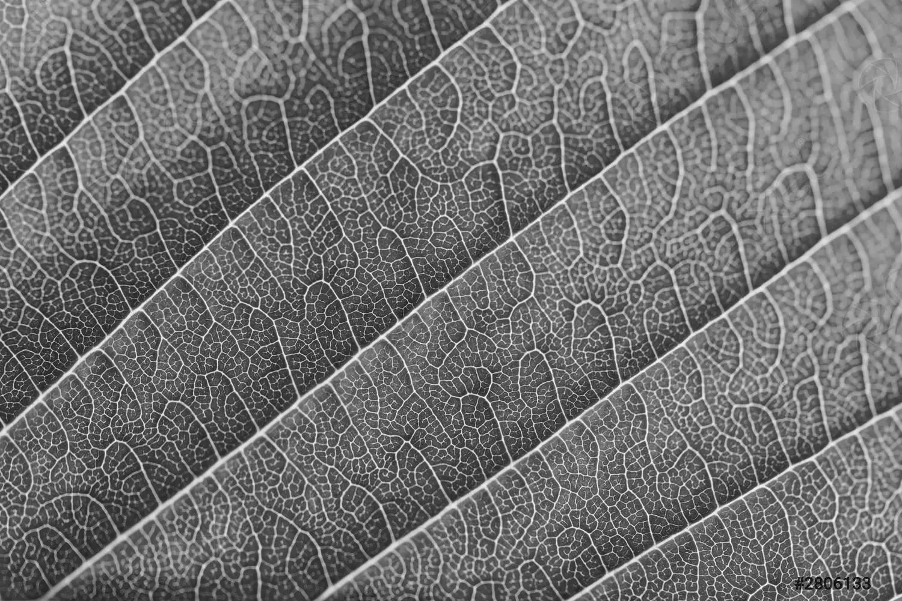
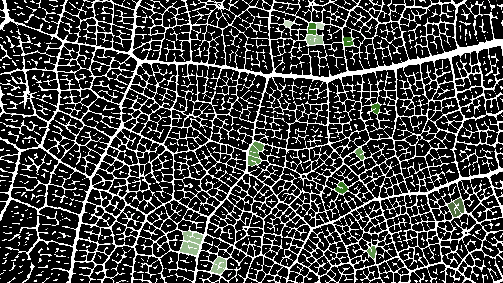
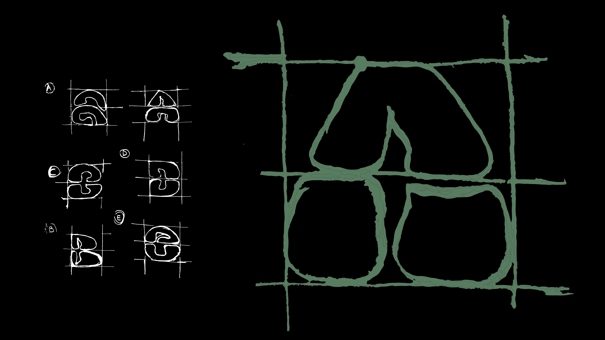

Il progetto propone una font in grado di restituire le nervature delle piante e le forme umorali che queste creano, sia a livello microscopico nella definizione dei singoli glifi, che a livello macroscopico nel loro accostamento. Risultato di milioni di anni di evoluzione, queste composizioni variano anche all’interno di una singola specie, tanto da poter dire che ogni pianta ha un umore diverso dall’altra.

Anche le piante - come alcune persone - possono definirsi umorali e lunatiche.

